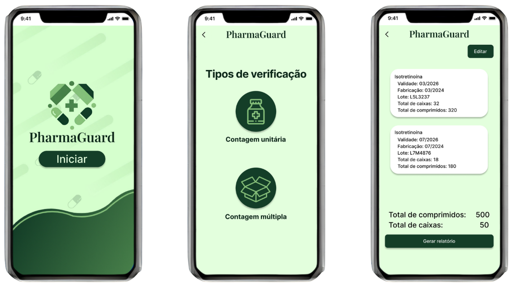

Olá, sou Ádson! Eu tenho 19 anos, sou de Gravatá mas me mudei para Recife para estudar Ciência da Computação no Centro de Informática da UFPE. Mas já morei também em Caruaru por alguns anos, atualmente me divido entre essas três cidades. O meu primeiro contato com tecnologia veio a partir dos jogos, principalmente Minecraft (o maioral kkkkk). Faço tudo ouvindo música ou podcasts e de tempos em tempos fico obcecado por alguma performance de algum artista, apresentações ao vivo têm meu coração e sempre assisto e ouço a alguma no repeat por semanas! Arte tem um lugarzinho no meu coração! Música, dança, literatura ou fotografia, não sou nenhum expert nessas áreas, mas admiro e estou buscando conhecê-las melhor. Falando sobre livros, o meu favorito é “A Menina Que Roubava Livros”, ele me emocionou muito. Adoro assistir ao pôr do sol, é o meu momento preferido do dia! Acredito que estar com quem a gente gosta nos dá vida, valorizo as pessoas e o esforço de cada um nas relações que buscamos construir e manter.
Estou me encaminhando para o segundo período de Ciência da Computação, no primeiro semestre pude realizar alguns projetos dos quais tenho muito orgulho do resultado!
O CIn Saída é um jogo de plataformas inspirado no clássico Fireboy and Watergirl, porém ambientado no Centro de Informática. No jogo uma caloura precisa pegar o seu crachá para sair pela catraca enquanto desvia de bebedouros vazando e faz um breve tour por alguns lugares bem conhecidos do centro! O projeto foi a avaliação final da disciplina de Introdução à Programação e nele utilizamos Programação Orientada a Objetos, bibliotecas e a linguagem Python. Link para o repositório no GitHub
O PharmaGuard é um artefato digital idealizado para agilizar processos hospitalares, mais especificamente a etapa de contagem e verificação dos produtos recebidos em almoxarifado. Utilizando o contexto do Hospital das Clínicas da UFPE, a nossa equipe construiu o artefato com base nos processos de Design apresentados pelos professores da disciplina de Concepção de Artefatos Digitais. A partir desses processos, pudemos criar uma aplicação que de fato tem valor para os usuários e que também satisfaz a nossa vontade inicial de impactar os pacientes do Hospital das Clínicas com o uso da tecnologia. Explicamos mais detalhadamente no vídeo sobre o PharmaGuard.
